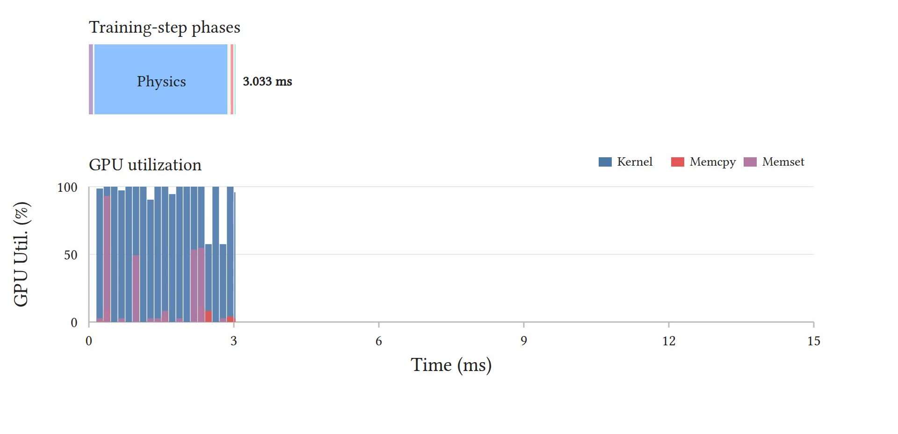
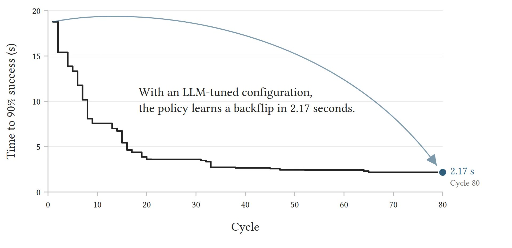
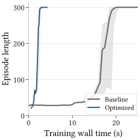

In the reference loop, most of a rollout step goes to reward evaluation, resets, and observation construction. InstantMimic fuses this work into Warp kernels and uses CUDA Graph replay to reduce launch overhead. Simulation state and reset decisions stay on the GPU, avoiding CPU round trips. PPO updates use PyTorch compilation.

Non-physics work takes 67% of the step.
Low GPU utilization outside physics.
Short training runs let an LLM agent try many configurations. The agent plans the search and proposes hyperparameter values. A Python executor trains and evaluates the candidates across multiple seeds, then returns the results so the agent can decide what to try next. In the backflip study, 80 cycles cut active training time from 18.77 s to 2.17 s.

